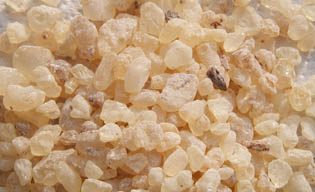

La
résine dammar
Liens directs
Fabriquer un médium dammar (autre page)
Usage dans un fixatif

Résine de pins Dammara, cette résine est très employée par les
peintres car elle combine trois propriétés remarquables :
*
elle est très transparente, très peu colorée (c'est la
moins colorée de toutes les résines solides naturelles) et ne jaunit pas
* elle donne une
peinture très brillante
* elle est peu coûteuse.
On la dilue
dans l'essence pour faire un médium maigre auquel on peut éventuellement
ajouter d'autres produits.
Elle présente un très léger défaut : même bien filtrée, elle
laisse
des dépôts cireux (résène bêta) dans les flacons, ce qui n'a guère d'importance. On peut
très bien la raffiner par décantation (voir article),
mais nous sommes assez nombreux à avoir constaté que cela n'est pas
forcément nécessaire avec une gomme de bonne qualité.
Elle rend de grands services. Au point de vue de la siccativité, elle est assez neutre.
Chimiquement parlant elle laisse indifférent le papier
tournesol.
La dammar batavia est (à tort ou à raison) la plus réputée parmi les
différentes variétés de cette gomme. Toute information sur les qualités des
différents types de gomme dammar est bienvenue étant donné que la source de l'approvisionnement demeure un
information vraiment très opaque dans l'offre généralement proposée en Europe.
Sur la question des
insolubles dans l'essence à peindre, peu de données.
Xavier de Langlais ne donne aucun chiffre
et André Béguin non plus.
François Perego en donne, mais ils ne
semblent pas très parlants pour le peintre. En effet, il indique que par exemple
la variété Batavia est totalement soluble dans la térébenthine. Mais
qu'en est-il dans les faits ? A laisser la gomme se dissoudre intégralement,
on intègre aussi sa cire. Celle-ci laisse un "reste" poisseux inexploitable,
d'un volume conséquent, qu'il faut ensuite éliminer par décantation. Une
dissolution intégrale n'est guère compatible avec l'usage en peinture car les composants les plus
indésirables se répandent dans le médium. De nombreux enseignants
conseillent une durée de dissolution modérée afin précisément d'éviter cet
écueil, d'autant plus que l'utilisateur ignore souvent de quelle variété il
s'agit.
Comment fabriquer votre
médium dammar ?
 Voir article.
En cas de problème voir ici.
Voir article.
En cas de problème voir ici.
Emploi
comme
fixatif
Un fixatif peut être réalisé avec
cette remarquable résine dont l'insoluble dans
l'alcool est
compris entre 28,50 et 19,10 selon Xavier de Langlais.
Citons le
témoignage d'un jeune artiste que nous nommerons Gabriel. Gabriel a réalisé
un test comparatif très intéressant. Il s'agit de protéger un travail au
fusain au-delà de la fixation simple réalisée avec
les produits courants. Gabriel veut sinon vernir son travail, du moins le
fixer bien solidement :
Notes à droite
J'ai fait une
eau gommée à partir de gomme arabique "en
cailloux", et une autre avec de la gomme dammar diluée à
l'éthanol, que j'ai faite aussi (les deux
suivant les instructions de votre site). Je les ai passés au pinceau sur un
fusain préalablement fixé bien sûr, et le résultat est celui que j'espérais :
cela ne dénature pas le fusain, il garde sa transparence et sa couleur,
c'est-à-dire le gris ne devient pas noir.
La gomme arabique peut protéger mais
elle est un peu fragile pour que l'on puisse
l'employer comme vernis à proprement parler.
Avec la gomme arabique, l'aspect est
satiné, avec la dammar, l'aspect est brillant.
Par contre on voit un peu les traces de pinceau - je n'ai cependant pas
utilisé un pinceau synthétique souple et fin, ce qui résoudrait peut-être
le problème (j'ai pris un pinceau "de bricolage").
Un poil fin peut résoudre le problème
mais n'oublions pas la soufflette.
Le dammar n'a pas fait de taches de gras, il n'a même
pas laissé de cire dans le bocal où je l'ai préparé.
La quantité de cire dépend notamment du
temps de dissolution.
En ce qui concerne le
dévernissage, dans mon cas (fusain verni) bien sûr, la question ne se pose
pas, cela détruirait l'oeuvre. Vraisemblablement, mais cela aussi dépend de la
nature du fixatif.
Effectivement, une couche de fusain même fixée est bien fine
par rapport à
une couche de peinture, donc le décollage d'un tel "vernis" paraît une mission
impossible.
Les deux pellicules de vernis sont par contre assez
"cassantes", donc c'est la dernière étape du processus (il faut maroufler
avant).
L'usage de dammar sur d'autres types de surfaces picturales ne donne pas un résultat
spécialement cassant, y compris sur support souple. Il en va de même pour la
gomme arabique.
Mais tout dépend de l'épaisseur. S'agissant
d'une aquarelle, d'un jus fait de peinture à l'huile
diluée avec un médium dammar même maigre, cela reste très fin, très dilué et
l'on n'a pas entendu parler de problèmes à ce sujet.
Dans
votre cas il est question d'une protection presque de l'ordre du vernis.
Donc il vaut mieux en effet maroufler le support
avant cette opération afin d'éviter des incidents liés à une rigidité qu'un
support trop souple mettrait à trop rude épreuve.
Retour
début de page